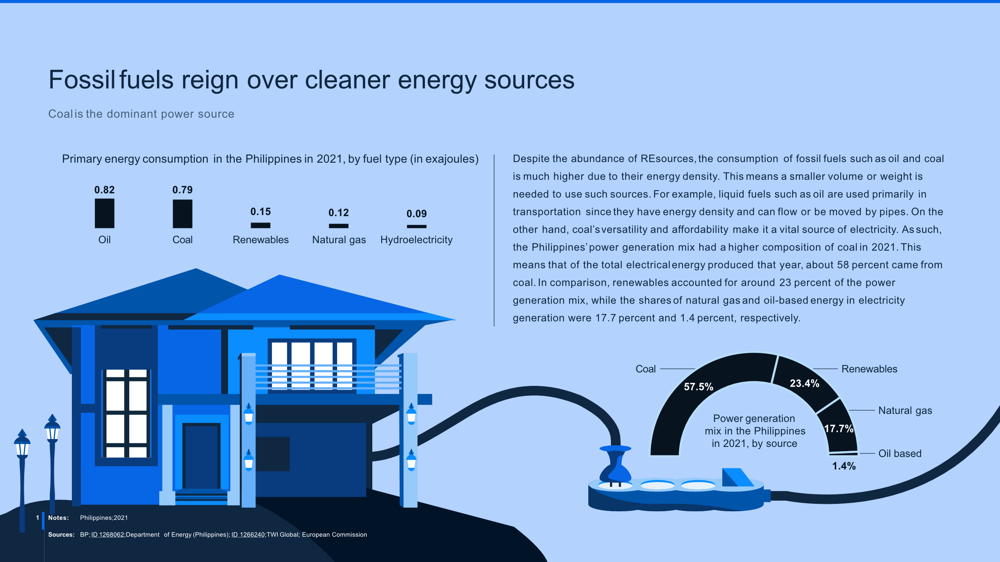
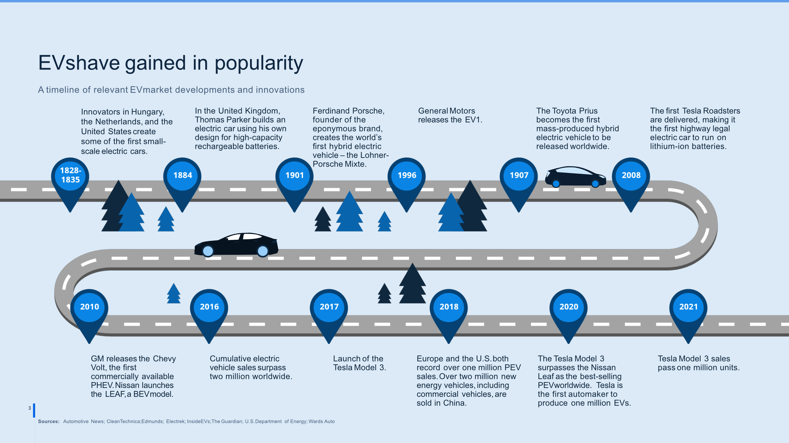
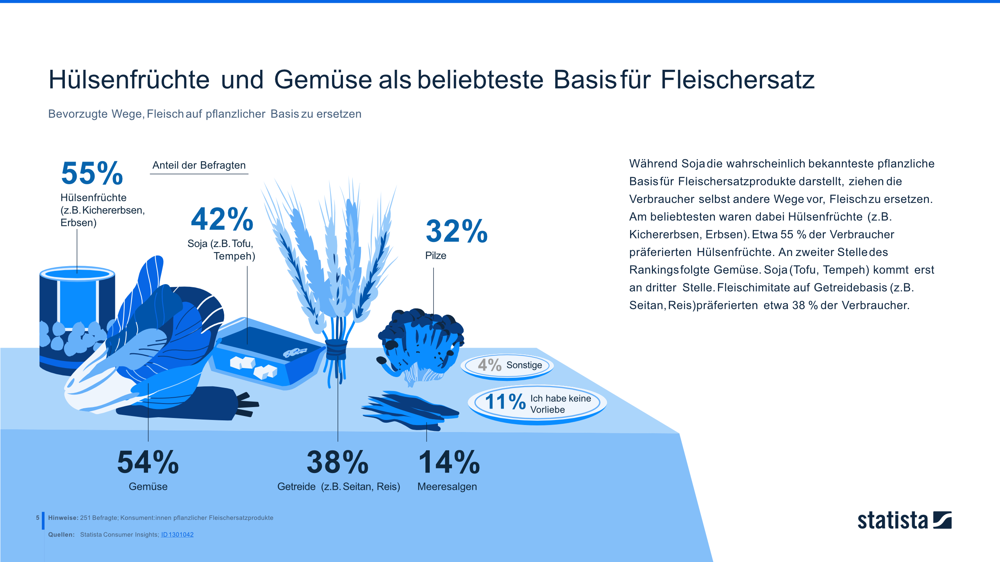

The Work
Translating Data into Stories
The key question behind every piece: what is the one message this data needs to say? I worked closely with researchers to find that answer, then designed everything from simple branded charts to complex multi-page infographic reports.
Analysed and prioritised complex content before designing
Translated key messages into charts, infographics, and illustrations
Collaborated closely with researchers and editors throughout each project

All content shown is the intellectual property of Statista GmbH and is used here solely for portfolio purposes. Reproduction or commercial use is not permitted without written permission from Statista GmbH.

Content and intellectual property of Statista GmbH. Used for portfolio purposes only.

Content and intellectual property of Statista GmbH. Used for portfolio purposes only.
What I learned
Content clarity: presenting complex information in an accessible, understandable way
Data storytelling: finding the narrative that makes information memorable
Collaboration: developing content together with researchers and editors